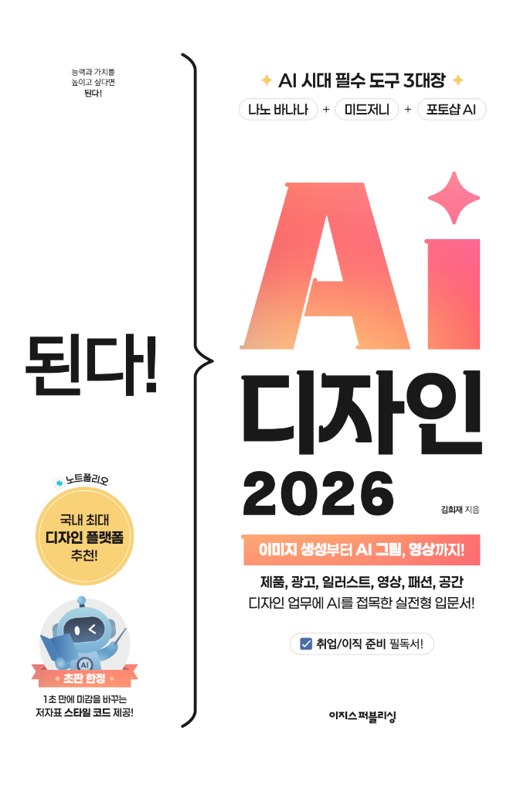

김희재
AI 크리에이터
AI 강사
마케팅 디자이너
여러 브랜드의 디자인 기획부터 제작까지 전 과정을 맡아왔으며,
현재는 생성형 AI를 활용한 디자인 트렌드와 실무 적용법을 주제로 강의하고 있습니다.
경력 · 디자인 실무
2017.01 — 현재
대학내일
비주얼크리에이티브1팀 선임매니저
2015.03 — 2016.11
루키커뮤니케이션
디자인팀
강의 이력
오프라인 강의
온라인 강의 (VOD)
2025
탈잉 · VOD
대학내일 사내 강의
2026
생성형 AI 이미지 기초 강의
대학내일 · 사내 · 임직원 대상
2025
영상 PD 직군 대상 미드저니 강의
대학내일 · 사내 · 임직원 대상
2024
생성형 AI 기초 강의
대학내일 · 사내 · 임직원 대상
2024
디자인 커뮤니케이션 강의
대학내일 · 사내 · 임직원 대상
수상 · AI 공모전
2025.08
고흔진 AI 영상광고 공모전
브랜드 스토리텔링 부문
최우수상
2025.12
카페인중독 AI 활용 영상 공모전
AI 활용 브랜드 영상
특별상
2025.12
2025 제1회 퓨리얼 AI 영상 콘테스트
AI 활용 브랜드 영상
참가상
출간

된다! AI 디자인 2026
출판사 이지스퍼블리싱 · 단독 저자
2026년 4월 출간
2026년 4월 출간